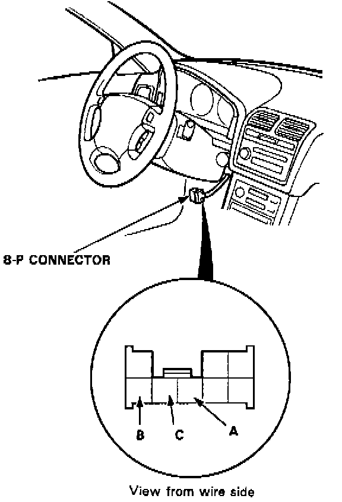
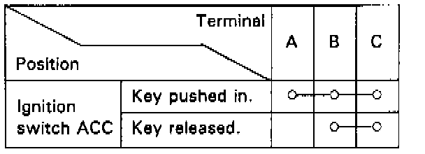

Key Interlock Solenoid Test
KEY INTERLOCK SOLENOID TEST
1. Remove the dashboard lower panel.

2. Disconnect the 8-P connector from the main wire harness.

3. Check for continuity between the terminal in each switch position according to the table.
4. Check that the key cannot be removed when the battery is connected to the A and B terminals.
- If the key cannot be removed, the key interlock solenoid is OK.
- If the key can be removed, replace the steering lock assembly (key interlock solenoid is not available separately).